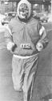
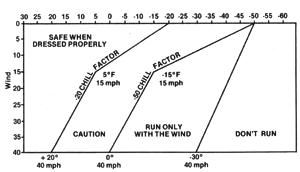

Excerpt by permission from The Last Word on Running by Richard Karlgaad, copyright © 1978 by Caroline House Publishers, Inc., Box 738M, Ottawa, Illinois 61350, Available in paperback for $7.95 from the publisher.
Is it ever too cold to run?
If a runner takes adequate precaution-dressing properly and staying on well-traveled roads-there are few days too cold for running in North America. I ran through five North Dakota winters (the worst in the continental United States) and missed less than a handful of days because of foul weather. The temperature, even 40 degrees below zero, was never too cold by itself. The wind, though, sometimes drove the chill factor down to 100 below. A temperature, wind, and chill factor safety chart appears at the bottom of this page.
What are the dangers of running in cold weather?
The biggest danger is having to stop, being unable to continue, and having no one see your plight. This is why you should never overextend on a cold day. This is also why you should run only on well-traveled roads.
Of course, never run in a blizzard or otherwise poor visibility. Blizzards kill because people get lost in them.
The nagging danger-unless you dress properly-is frostbite, mostly in the fingers and ears. Runners usually don't freeze their toes as long as they keep moving. When walking in cold weather, one may need heavy socks and boots to keep the feet warm, but runners stay quite toasty in ordinary sweat socks and running shoes. Just stay out of deep snow.
The ears and fingers are another story. The ears should be covered with a heavy, snugly fitting stocking hat pulled down past the earlobes. If you normally wear your hair long, wear it longest in the winter. Hair is great ear protection.
The hands and fingers should be covered with mittens, not gloves. Gloves divide the fingers, and cold conquers.
The best mittens are those two-piece affairs worn by woodchoppers. The inner mitten is wool and can be worn by itself in temperatures above zero. The outer mitten is made of thick leather and protects the hands and fingers in the coldest weather. Even then, the thumb sometimes gets cold. Buy your mittens large enough to place your thumb with the other four digits.
TEMPERATURE
That leaves the face as the only exposed area. Can parts of the face be frostbitten?
The face, because of its better circulation, resists cold better than the ears or fingers.
Still, when you run into the teeth of a 60-below wind chill, you might have problems. The tip of the nose is especially vulnerable to frostbite. The only other problem I've had with my face was when I was temporarily blinded because sweat froze my eyelashes shut. This happens if you unwisely run with the wind at first, build a sweat, and then turn to face the wind.
The best facial protection is a ski mask. Buy one in addition to your stocking hat.
How should we dress the body in cold weather?
The rule is, the warmer you are in the extremities- your head, feet, and hands -the less you need to wear on the body. In temperatures around 40 degrees, marathoner Bill Rodgers wears light gloves in races as additional protection.
Another rule is, several thin layers of clothing are warmer than one thick covering. Space between the layers traps body heat.
Here is a recommended list of winter running clothes:
STOCKING HAT. Buy one that is thick and which fits snugly. Wool is best. They cost two to five dollars.
SKI MASK. Own a ski mask in addition to a stocking hat. On coldest days you'll need both. The cost is two to five dollars.
TURTLENECK SHIRT. Fashion doesn't count, so buy one at the discount store. It should be loose fitting and made of cotton/ polyester. Don't spend more than three dollars.
THERMAL UNDERWEAR. You can buy both the top and bottom for five dollars.
WARM-UP SUIT. For 10 dollars you can purchase an adequate cotton sweat suit. However, a nylon/polyester suit breaks the wind much better. They cost from 25 to 70 dollars, although 50 and up is purely for fashion.
WINDBREAKER JACKET. You can buy one with cotton lining for 10 dollars.
ATHLETIC SOCKS, OVER-THE-CALF. These will cost two dollars a pair.
WOODCHOPPER MITTENS. Good mittens cost 10 dollars, but buy them anyway. In the long run they're less expensive. Good leather lasts for years.
You now have everything you need to run comfortably on a January day in Bismarck, North Dakota. See the accompanying sidebar for recommended dress chart for various winter weathers.
Do I need to wear special shoes in the cold?
No, but some find leather shoes slightly warmer. Whatever you decide to wear, buy your shoes big enough to wear with thick athletic socks. You might have to move up a half size.
Within my locality, where are the warmest places to run?
The temperature won't vary much within any locality, but the wind will. The following are the calmest places in any locale:
LOWER ELEVATIONS. Wind grows stronger with increased elevation.
OLDER RESIDENTIAL AREAS. The fully grown trees in these areas act as wind buffers.
DOWNTOWN. The taller buildings are good wind buffers, too. Be alert for traffic, though.
PARKS. The older parks have the taller trees.
The most important Up to remember when running in the cold and wind is: Plan your courses to run first against the wind and last with it. This is both physiologically and psychologically advantageous.
I have one further question. Can cold weather running damage the lungs?
No, that's another myth perpetuated by non-runners. The fingers, toes, and ears are your body's bellwethers ... they will freeze before any vital organ, including the lungs, will.
WHY RUNNING IS FUN FOR SOME AND BORING FOR OTHERS
Here is how to keep the fun in your running:
For your everyday runs, choose to run either for a certain amount of time, say, 30 minutes ... or for a certain distance, say, four miles. Avoid setting a goal of four miles in 30 minutes, and never feel each run has to be faster than the previous. Self-inflicted, needless pressure is the last thing you need for a leisure activity. Even the best runners in the world rarely time themselves in training runs.
Measuring your courses isn't necessarily bad, but a rough estimate of distance is all you really need. Who cares if a training run is 10 miles or 10.5? You are not timing yourself, remember?
Plan each day's run for weather, amount of time you want to spend running, etc., but be flexible. You might feel tired and want to go slowly. Or you might feel fresh and want to, as the British runners say, bash it. Let your body choose the pace and distance of the day.
If you count your mileage, preface your total with "about". Don't say anything more precise than "about 25 miles a week". Mileage totals aren't important. Quality of enjoyment is.
Neither should you hold yourself to a certain number of miles a week. Never say, "I have to run 25 miles this week." If you end up running 25, fine. If you run 24, that's fine too. Is there really much difference?
Don't count the number of days you've run consecutively. Once you build a streak, you'll want to protect it at all costs. "Damn this pneumonia," you'll say. "I must run, anyway." How much better to say you try to run every day.
Run if you want to, run if you can. Some colds and injuries are mild enough to run with. Some aren't. Use your head. I once ran the San Francisco Bay-to-Breakers race while nursing a bad cold. Two days later I had strep throat, and a week later, mononucleosis. Think of it this way: When sick or injured, you have far more to lose than gain by running.
Don't hurry your runs. Running is leisure: Luxuriate in it. If you can spare only 20 minutes, that's too little for a run. Do yoga or take a sauna instead.
Always spend at least five minutes stretching before you run. Stretching is an effective injury preventive, and its meditational qualities will relax you and put you in the proper mood for running.
Begin your runs slowly. Spend the first ten minutes walking, jogging, and stretching. Check out your body ... it may be tired today. There is plenty of time to run faster. You get the most out of running when moving at your aerobic limit, which is as fast as you can run comfortably without breathing hard. Nobody in the world runs fast and comfortably at the outset, when the muscles are tight and the blood hasn't flowed. This takes a few minutes and is not to be rushed.
Pain by itself does not equal gain. Gain results from general consistency and occasional hard effort. Seeking pain for its own sake is not only needless but destructive.
Don't be afraid to stop. Stopping ruins nothing. On the other hand, running when you're dehydrated or injured can ruin just about anything.
Any pace faster than sedentary is beneficial. The only worthless runs are those you don't enjoy.
Avoid runners who like to compete in practice (unless, of course, you feel like competing that day). If someone escalates the pace, and you don't feel like following, don't.
Always be open to suggestion, but take lightly the advice of others. Try everything yourself. Never believe that someone else knows you better than you do.
Set the vaguest goals for each run-" I want to run seven miles and have fun" and let your career unveil itself. For those of you who choose to compete, avoid setting time goals. Set only the goal of improving the body and making it one with the mind. Your results and times can only be a function of this.
Experiment with different routes. Keep those you enjoy and drop those you don't. Choosing to run by time rather than distance will encourage you to seek different routes. Get to know where you live via your running.
Indulge your body and heed its wants. If you are thirsty, drink. If you're tired, slow down. If you're exhausted, stop. Work with your body, not against it.
If you find yourself stranded on a road and unable to continue, take the first offered ride. When you get home, reward yourself for using common sense.
Runners are neither good nor bad: They are only fast or slow. Feel affinity with all of them ... you have something in common. Lend encouragement to slower runners ... you were once as slow as they. Respect, but never worship, faster runners. Be your own hero.
Efforts are not good or bad: All are good, and some are merely better than others. Learn to love yourself for all efforts. You have only one body and mind ... work with them lovingly. Reward yourself whenever you want to.
Sacrifice nothing for running. If running conflicts with other activities, make a choice of positives. Go to bed when you want to, if that's your positive choice. Staying up late to drink wine and talk with friends is fun ... sometimes more fun than running, sometimes not. You choose. It takes a person of character and good mental health to choose what he wants.
|
 PHOTO COURTESY OF THE BISMARCK (N.D) TRIBUNE |
 |
|